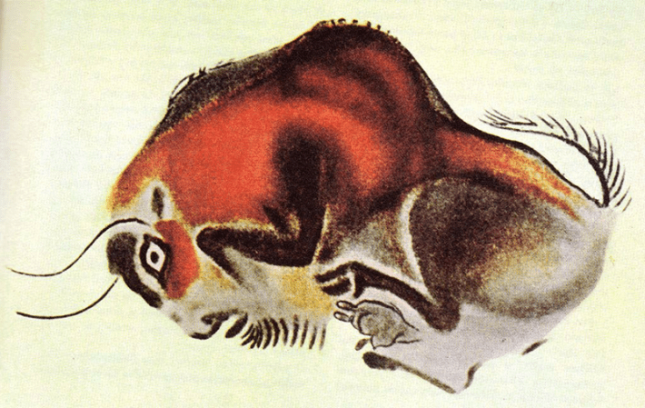

Fernando Morán’s epiphany came in 2006. A female European bison in the Santillana del Mar Zoo in northern Spain, where he was a visitor, pushed her head through the bars of her enclosure and, as he reached out to her, she lifted him clear off the ground. Morán is certain the bison had an urgent message for him: Our species is in trouble.
“I’m really convinced after 15 years working with bison, that she just came to tell me ‘hey, there’s some things to do here, so stop doing what you’re doing and start helping,’” says Morán.
Within two years, the trained veterinarian had transitioned from working in game management and forestry and running a veterinary clinic to devoting himself to Bison bonasus. Today, Morán, 54, leads the European Bison Conservation Center in Spain, part of a wider network linking bison breeders to one another in countries where populations of the once critically endangered species are now growing. He is at the forefront of a large-scale campaign to bring bison back to the Iberian peninsula.
The European bison rewilding project seems at first like an easy, feel-good success story, much like similar efforts in the United States to revive its close cousin the American bison. (That project got underway with the formation in 1905 of the American Bison Society, one of whose founders was Theodore Roosevelt.) Europe’s heaviest land mammal—adult males weigh up to 2,000 pounds—went extinct in the wild in the 1920s but was reintroduced into Poland’s Białowieża Forest in the 1950s. Since then, breeding programs and other reintroduction initiatives have boosted herds on the continent to over 9,000 animals. B. bonasus now roams the meadows and shadowy woodlands of many European countries.

WATCH YOUR STEPPE: Cave drawings, like this one in the Cave of Altamira in Spain, suggest that bison were once native to the region. Image courtesy of HTO / Wikimedia Commons.
Dozens of YouTube videos and articles about the European bison’s comeback hail the revival of these iconic beasts, and the videos have views in the thousands and hundreds of thousands. Some writings take an almost religious tone: “I believe in the power of nature, which in wild Europe, includes the almighty European bison,” writes one bison conservationist. The creature’s mystique goes back thousands of years: Paleolithic cave paintings of the bison in Europe suggest to some scholars that it had a connection to the spirit world, and the animal has long been sacred to indigenous cultures in the U.S., where it is seen as a symbol of strength and plenty.
People seem to really love bison. But it turns out that not everyone wants them.
Last year, a few dozen scientists from a range of institutions in Spain as well as the U.S., Switzerland, Australia, Germany, Italy, Hungary, and Polandsigned a paper in Conservation Science and Practicecalling for a stop to bison rewilding in Spain. They argue the species is a poor fit for the Iberian peninsula. “The debate [in Spain] between bison ‘yes’ or bison ‘no’ has never taken place at the level of scientific publications; it’s only been at the media level,” said Carlos Nores, a retired zoology professor who taught at the University of Oviedo in northern Spain, and one of the authors of the paper. Morán disagrees, arguing that his critics have refused to engage with more recent data on the bisons’ impact, that shows they are doing fine and have had no harmful effects. So far there are 184 bison spread across 12 different properties in Spain.
The crux of the debate in Spain seems to hinge on whether the bison really ever roamed the Iberian peninsula thousands of years ago, and whether a warming climate is hospitable to the animal. During the Late Pleistocene, Bison bonasus was widespread in Europe, according to a 2023 research paper in Proceedings of the Royal Society B. But there is little hard evidence that in these early years their extensive range included what is now Spain.
The authors of the Royal Society paper conclude that Central and Eastern Europe—sites of initial reintroductions—harbor the best habitat for the species. Spain would seem rather far off the map. But those pushing for bison on the Iberian Peninsula, including Morán, argue that certain beloved cave paintings are a sure sign that thousands of years ago the shaggy beasts once lived here and should return.
People seem to really love bison. But it turns out that not everyone wants them.
The Cave of Altamira in the Cantabrian region of northern Spain contains evocative images of bison painted by stone-age humans 14,000 years ago, which have had a cultural resonance in the country since their discovery in the late 19th century. The government of the region of Cantabria uses these images as tourist logos. (An American football team in Spain also calls itself the Cantabria Bisons.) The consensus view, however, is that the species depicted in this UNESCO World Heritage site is actually a different bovine that has been extinct not for just a century but for 10,000 years: the steppe bison (Bison priscus).
An even stickier argument concerns the climate, which has changed quite a bit in the thousands of years since the animals depicted at Altamira grazed.During the late Pleistocene the steppe extended into the Iberian peninsula. It was dry, tundra-like, and mostly treeless. But today, Spain is a much hotter place and it’s warming faster than much of the rest of the planet.
“The environmental conditions of the Iberian peninsula are not appropriate for this species,” Nores says. A high level of mortality and low-level birthrate compared to wild populations in Central and Eastern Europe bears this out, according to Nores, with far more deaths than births in the first 10 years of introducing bison into Spain. But rewilding success stories are often crooked, with many false starts, rather than following a straight line, and Morán counters the deaths were largely due to a lack of sufficient grazing area across which the animals could roam.
He’s been giving them more room to spread out, and that is seeming to help, he says. For example, out of the 18 bison introduced at the end of 2020 into Encinarejo—located inthe Andalusian municipality of Andújar, 195 miles south of Madrid, which Morán acknowledges is one Spain’s “frying pans”—all have survived four summers with five heatwaves, says Morán. He argues that this attests to “the plasticity” of the species.
Aside from helping the species survive extinction, the main ecological argument for bison rewilding is the ecosystem services they provide. As foragers, they gobble up woody plants and open up terrain for other species, while creating meadows that are more fire-resistant than forest. This is particularly crucial to the vast swathes of Spanish lands that were once home to cattle and other livestock that have been abandoned as the country urbanizes. Organizations like Rewilding Europe tout this ecological services thesis in popular videos championing the benefits of spreading B. bonasus throughout the continent. But Nores believes other herbivores such as red deer do an even better job at keeping woody plants from growing too densely, and they’re inarguably native to Spain.
The iconic status of the bison is certainly playing a part in its recovery. Rewilding Europe’s 2014-2024 Bison Rewilding Plan makes a pitch for ecotourism. But charisma presents its own dangers. Introduced “emblematic species are always hard to get rid of, if they start causing problems,” Nores says, citing the case of the cocaine hippos in Colombia. Descendents of the drug lord Pablo Escobar’s captive herd, these hippos now number 200 and roam freely throughout the countryside. They’re dangerous animals, could crowd out native endangered species, and have already increased nutrient loads in waterways, which could lead to oxygen-sucking algae blooms. And due to outcry from animal rights activists over government plans to euthanize them, Colombia is pursuing a costly program of sterilization instead.
So far no one expects bison populations to explode in such a manner. In fact, at Encinarejo, the owners are so pleased with the bison that they’re working on bringing another endangered species into Spain: Przewalski’s horse. 
Lead image: Szczepan Klejbuk / Shutterstock